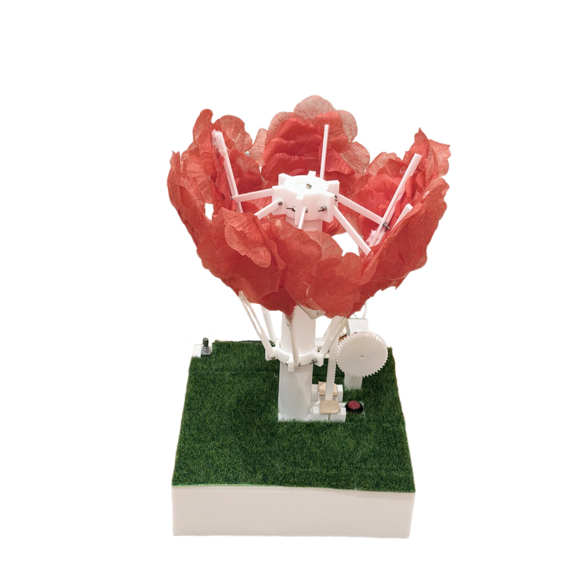
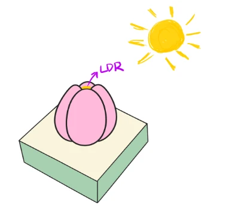
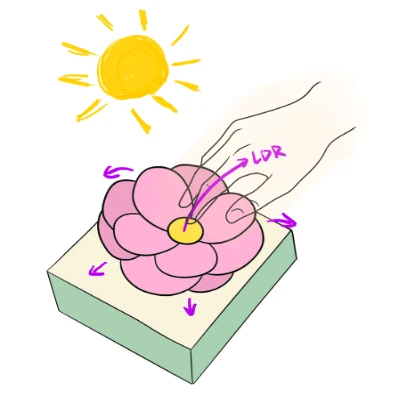
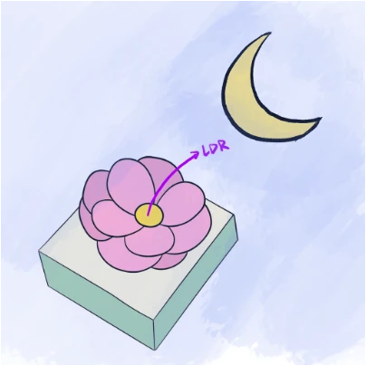
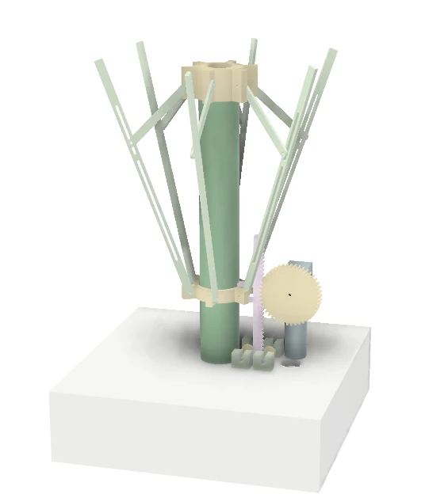

ShyBloom.
A little light.
A living gesture.
Make light
feel alive.
Inspired by mimosa. Shaped by an umbrella. A playful object that opens in low light and invites a small moment of interaction.
Make it bloom ↗Physical prototype / DE2 Gizmo · Group 40
A flower lantern connecting light sensing, linked petal motion and adjustable LEDs.
- Team
- Cici Song · Yuxuan Zhou
- Context
- DE2 Gizmo · Group 40
- Scope
- Interaction concept · CAD and linkages
Bela control · Physical prototyping
01 / FEEL THE INTERACTION
Try the
light-responsive flower.
Shade the sensor, adjust room light and try breathing mode. The flower opens in low light to reveal its glowing centre.
A shadow reduces the light reaching the LDR.
In bright light, the flower closes and the LEDs switch off. Shade the sensor or dim the room to open it.
Interactive reconstruction: simplified geometry and travel; illustrative light levels and timing, not calibrated prototype readings.
LDR
Read the light reaching the top of the flower.
Bela
Compare the reading with a preset threshold.
Servo + LEDs
Move the petals; set the light from the knob and button.
From a poetic gesture to control logic
Bela reads the LDR and potentiometer continuously. A preset threshold controls opening/closing; the knob adjusts brightness and a button toggles breathing. Small servo steps slow the movement.
02 / START WITH A GESTURE
Interaction concept:
rest, respond, glow.
Inspired by mimosa and umbrella motion: close in bright light; open under shade or darkness.

Rest.
Petals close. The light stays off.

Respond.
A hand changes the light reaching the sensor.

Glow.
The open form becomes a small lantern.
One drive coordinates the petals through linked arms.
An LDR senses illumination; it does not directly measure distance.
Light is housed in the central pillar of the documented mechanism.
Concept → build: adaptive shadow detection became a preset light threshold; petal-mounted lighting became five LEDs in the pillar.
03 / MAKE THE GESTURE MOVE
Mechanism:
one drive opens the petals.
A rack and pinion lifts the lower ring. Linked arms move around the fixed upper ring, opening the petals together.
Turn. Lift. Unfold.
The parts move together. Explore each connection below.
Rotation → vertical travel
The motor turns the gear. Its teeth push the rack up or down.
The lower ring rises
The rack is connected to this ring. The upper ring stays in place.
The petals open with the arms
The links transfer the ring’s movement to the petal supports.
Simplified motion explanation. Parts are separated for clarity; proportions and travel are illustrative.

Light sensorSELECT A PART
Read the light, at the top.
The top-mounted LDR responds to hand shadows and changing room light.
04 / LEARN FROM THE BUILD
Build issues
& refinements.
The build exposed joint play, excessive linkage travel, rack drift and abrupt servo motion. Explore the fixes.
Joint detail / Physical prototype, page 5
05 / THE PHYSICAL PROTOTYPE
The built
flower lantern.
Original photographs show coral petals, linked arms and five LEDs in the central pillar.
From the screen
to the workbench.
The assembled petals, pillar, linkage and gear drive retain exposed prototype wiring.
A quiet glow
within the form.
Low light reveals the glow through the petal material and supporting structure.
Let the centre
become visible.
Opening the petals reveals the illuminated centre.
06 / BRING THE EXPERIENCE TOGETHER
Next: improve lighting
and test repeated use.
The prototype connects sensing, petal motion, adjustable brightness and breathing light. Reliability and discoverability are the next questions.
A more integrated light.
Proposed: RGB/NeoPixel control, pillar openings and petal-mounted lighting.
Measure the experience.
Measure power, cycle reliability and varied-light response. Test unprompted discovery of the interaction.
Cici Song & Yuxuan Zhou · DE2 Gizmo · Group 40.
Source: “Gizmo Portfolio Group 40”—sketches, CAD, code and prototype photos. Energy savings are intended, not measured.